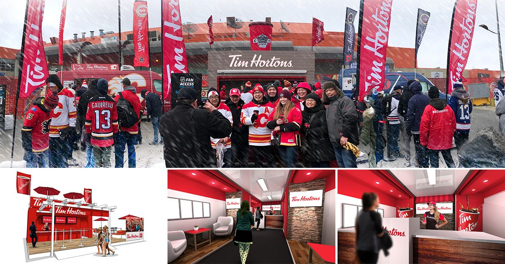

Tim Hortons
Tim Hortons Coffee for Communities
Canada's most popular QSR, on the road from coast to coast.
This nationwide program was born to support Tim Hortons' national marketing and grassroots communities from coast to coast. Twelve mobile units across Canada attend thousands of events a year to raise money for charity and bring relief to communities.
Now in its sixth consecutive year, Coffee for Communities takes Canada's most popular QSR on the road and touches the lives of millions.
The program required close coordination with a nationwide team to operate, produce and capture content for the programs and special promotions that branch from it, like Mother's Day, Canada Day, sponsorships and disaster relief activations.
Along the way I had the opportunity to work closely with hundreds of creatives, vendors, videographers and agencies in Canada and the US.
